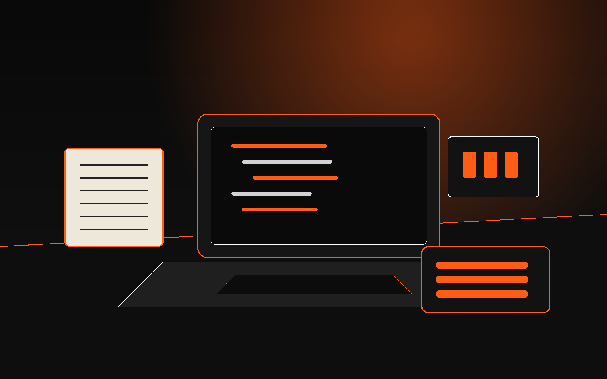

2026
PDV Mercadinho
Frente de caixa e gestão para pequenos mercados, com foco em fluxo de venda, organização de produtos e rotina operacional.
Ver detalhes
Portfólio de sistemas e estudos
Estudante de Análise e Desenvolvimento de Sistemas, com base prática em processos, melhoria contínua e desenvolvimento de aplicações.
Perfil
Sou técnico em Administração e tenho experiência com rotinas administrativas e operacionais. Também tenho familiaridade com atividades de TI, SAP e pacote Office. Busco uma oportunidade em uma empresa onde eu possa aplicar minhas habilidades, contribuir com os resultados e crescer profissionalmente junto com a equipe.
Projetos
2026
Frente de caixa e gestão para pequenos mercados, com foco em fluxo de venda, organização de produtos e rotina operacional.
Ver detalhes2026
Sistema para organização de dados territoriais e apoio à gestão de informações operacionais em formato digital.
Ver detalhes2026
Projeto voltado para organizar regras, fluxos e estrutura de uma aplicação de forma mais clara e reaproveitável.
Ver detalhes2026
Site pessoal estruturado para documentar projetos, estudos, competências e evolução profissional de forma cronológica.
Ver detalhesTrajetória
IFSP - Instituto Federal de São Paulo. Base em organização, rotina administrativa e formação técnica.
Universidade Anhembi Morumbi - SJC. Estudos em programação, desenvolvimento de sistemas, banco de dados e metodologia ágil.
Desenvolvimento de portfólio, aplicações web e aprofundamento em Java, Python, C/C++ e fundamentos de sistemas.
Vet&CIA. Atuação em operação, apoio à liderança, responsabilidades com equipe e acompanhamento de rotina produtiva.
MARS Brasil. Experiência com rotina produtiva, SAP GUI, 5S, Kaizen, melhoria contínua e relações humanas no trabalho.
Competências
Java, Python, C/C++, HTML, CSS e JavaScript.
Ver detalhesSAP GUI, 5S, Kaizen, análise e resolução de problemas.
Ver detalhesTrabalho em equipe, boa comunicação, aprendizado rápido e atenção a detalhes.
Ver detalhesLeitura, escrita e comunicação em desenvolvimento.
Ver detalhes